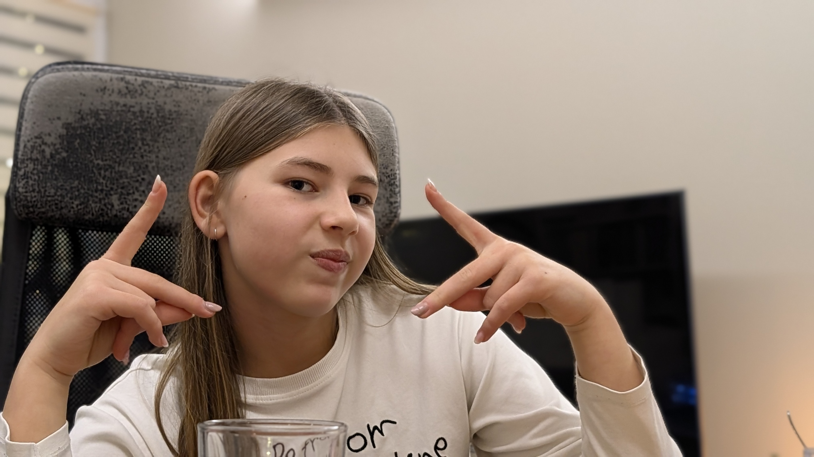
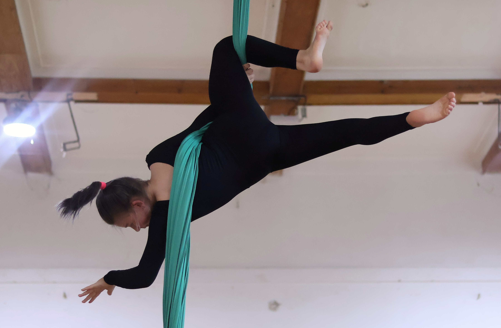
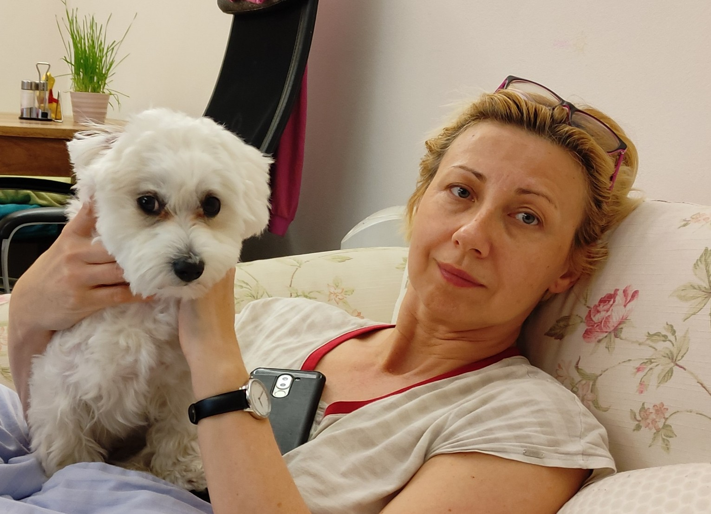
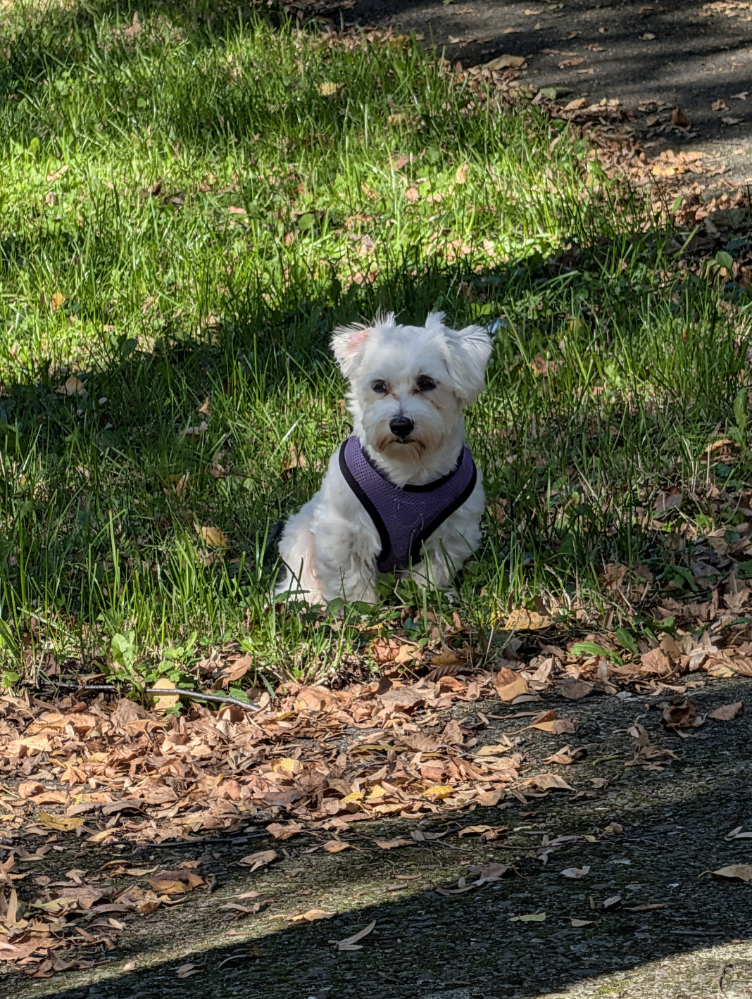

Angličtina
pro Adélku

ŠKOLNÍ ROK 2025/2026
Angličtina 6. třída
Project Explore 1 · Lekce 1–6
ŠKOLNÍ ROK 2026/2027
Angličtina 7. třída
Připravujeme...
PROCVIČOVÁNÍ
Nepravidelná slovesa
75 sloves · infinitiv + minulý čas
← Zpět
INFINITIV
MINULÝ ČAS
🎤 Řekni slovo
Další →
Angličtina
pro Adélku

učitelka Radka

SLOVÍČKA
Lekce 1–6 • kompletní mapa učebnice
SPOJENÍ (CHUNKY)
Celé fráze — řekni to jako rodilý mluvčí!
SPOJENÍ (CHUNKY) GENEROVANÁ Z LEKCÍ
Nová spojení vytvořená ze slovíček jednotlivých lekcí
SHADOWING
Později

SLOVÍČKA 6. TŘÍDA
Vyber si lekci, Adélko! 📚
← Zpět na výběr částí
Ahoj Adélko!
Jak se řekne...
Učit se
Zkoušet
Ukázat odpověď
🎤 Řekni slovo
Další slovíčko
SPOJENÍ (CHUNKY)
Vyber si lekci, Adélko! 📚
← Zpět na výběr lekcí
Ahoj Adélko!
Jak se řekne...
Učit se
Zkoušet
Ukázat odpověď
🎤 Řekni frázi
Další fráze